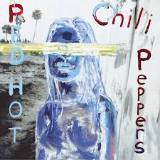

Varios meses después de su primera actuación, la banda firmó con la compañía discográfica EMI. Pero dos semanas antes, What Is This? (el nombre posterior de los Anthym) había obtenido contrato con MCA, por lo que Slovak e Irons dejaron Red Hot Chili Peppers y se dedicaron a What Is This?. Kiedis y Flea no pensaron en disolver la banda, sino que decidieron reclutar a nuevos miembros. Cliff Martínez, un conocido de Flea de la banda punk The Weirdos, pidió sumarse a los Chili Peppers poco después. También se uniría Jack Sherman, "el rey pirata".
Andy Gill, el guitarrista de Gang of Four, también pioneros en la incorporación del funk al estilo punk, fue contratado para producir su primer álbum. A pesar de que Kiedis y Flea dudaron, él empujó a la banda a tocar música más viable comercialmente. En un principio Kiedis quería titular el disco True men don't kill coyotes, pero la compañía quería que el título fuese The Red Hot Chili Peppers, a lo que el grupo tuvo que acceder finalmente. El disco salió el 10 de agosto de 1984 y fue un fracaso comercial. Vendió aproximadamente 500.000 unidades y obtuvo poco reconocimiento. La siguiente gira estuvo un poco mejor, aunque Kiedis y Sherman tenían una relación muy tensa. Sherman fue despedido poco después y Slovak regresó a la banda, después de hartarse de What Is This?.
Blood Sugar Sex Magik es el quinto álbum de estudio de la banda estadounidense de funk rock Red Hot Chili Peppers, lanzado el 24 de septiembre de 1991. Producido por Rick Rubin, fue la primera grabación de la banda lanzada por Warner Bros. Records. Los estilos musicales de Blood Sugar Sex Magik difieren notablemente de las técnicas empleadas en el álbum anterior de los Chili Peppers, Mother's Milk, y contiene un pequeño uso de riffs de guitarra de heavy metal. El disco incorporó insinuaciones sexuales, referencias a las drogas y a la muerte, y temas como la lujuria y la exuberancia.
Blood Sugar Sex Magik vendió más de siete millones de copias solo en los Estados Unidos e introdujo a los Chili Peppers a la popularidad mainstream y la aclamación crítica. Blood Sugar Sex Magik produjo varios sencillos de la banda, entre los cuales se incluyen «Give It Away», «Under the Bridge», «Suck My Kiss», «Breaking the Girl» e «If You Have to Ask». La grabación también marcó la salida del guitarrista John Frusciante en 1992, durante el tour de la banda, hasta su regreso en 1998. Blood Sugar Sex Magik fue elogiado como el fundador del rock alternativo en los años 1990, y Steve Huey de Allmusic comentó que la grabación fue «...probablemente el mejor álbum que los Chili Peppers podrán hacer».7El álbum fue dedicado al californiano Mike Watt, cantante, compositor y bajista de punk. Fue multiplatino en múltiples ocasiones, estuvo en las listas Billboard durante catorce meses9 y a partir de 1999 pasó a ser el segundo más vendido de la banda tras Californication.
Californication es el nombre del séptimo álbum de estudio de la banda estadounidense de rock alternativo y funk rock Red Hot Chili Peppers. Rick Rubin lo produjo y Warner Bros. Records lo lanzó al mercado el 8 de junio de 1999. El álbum marcó el regreso de John Frusciante como guitarrista en reemplazo de Dave Navarro, lo que resultó en un cambio de estilo de la banda hacia un sonido radicalmente diferente al producido en el álbum previo One Hot Minute (1995).
El álbum incorporó varias insinuaciones sexuales comúnmente asociadas a la banda, pero también introdujo temas sobre lujuria, muerte, contemplaciones de suicidio y drogas. En 2007 la National Association of Recording Merchandisers y el Salón de la Fama del Rock lo colocaron en el puesto número 88 en su lista de Los 200 álbumes definitivos que todo amante de la música debería tener.
Californication contiene varios éxitos de la banda, entre los cuales se incluyen «Around the World», «Otherside», «Californication» y «Scar Tissue», ganadora de un premio Grammy. Californication alcanzó el puesto 3 en el Billboard 200 estadounidense. Es, hasta la actualidad, el álbum más vendido de los Red Hot Chili Peppers, con casi 16 millones de copias vendidas alrededor del mundo;1 una revitalización comercial en comparación a One Hot Minute.
By the Way es el octavo álbum de estudio de la banda estadounidense de rock alternativo Red Hot Chili Peppers, lanzado el 9 de julio de 2002 por Warner Bros. Records. Este vendió más de 282 000 copias en la primera semana, y alcanzó el puesto dos en el Billboard 200. Las canciones del álbum incluyen «By the Way», «The Zephyr Song», «Can't Stop», «Dosed» y «Universally Speaking». El contenido lírico de By the Way difiere de los álbumes anteriores de los Chili Peppers debido a un acercamiento más sincero y reflexivo por parte del vocalista Anthony Kiedis a sus letras.
By the Way fue aplaudido por los críticos como una salida de los estilos anteriores de la banda, y es reconocido por las melodías poco animadas dadas por los Chili Peppers. Al guitarrista John Frusciante se le acreditan la mayoría de las melodías del álbum, líneas de bajo, progresiones de guitarra, y por lo tanto el cambio de dirección en la grabación: «su cálido y minucioso trabajo de guitarra y sus armonías vocales de estilo doo wop es lo que destaca en esta ocasión». By the Way no tuvo prácticamente nada de la fusión de punk y funk con la que la banda se hizo conocida. Frusciante afirmó que escribir «By the Way ha sido uno de los momentos más felices de mi vida».

Stadium Arcadium es el noveno álbum de estudio del grupo de rock estadounidense Red Hot Chili Peppers, lanzado durante el mes de mayo de 2006.
Fue lanzado el 5 de mayo de 2006 en Europa y el 9 de mayo en los Estados Unidos, y el 21 de mayo en el resto del mundo, bajo el sello Warner Bros. Records. Vendió más de 442 000 copias en los Estados Unidos en la primera semana y debutó como número uno en la lista del Billboard 200. Del álbum se extrajeron cinco sencillos: «Dani California», «Tell Me Baby», «Snow ((Hey Oh))», «Desecration Smile» y «Hump de Bump». De acuerdo con el vocalista Anthony Kiedis, Stadium Arcadium se planeó originalmente como una trilogía de álbumes que serían lanzados con seis meses de diferencia, pero finalmente fue condensado en un álbum doble. Este es el último trabajo del grupo con la presencia del guitarrista John Frusciante, quien confirmó su salida de la banda en 2009.
El álbum fue generalmente aclamado por la crítica por integrar diferentes estilos musicales con los que la banda ha ido evolucionando con el paso del tiempo. El álbum ganó cinco de los siete premios Grammy a los que aspiraba en 2007, incluyendo el de Mejor Canción de Rock (por Dani California) y Mejor Álbum de Rock. Este es el disco con más nominaciones en la historia de la banda. Kiedis atribuyó el éxito del álbum a la mejor dinámica del grupo, diciendo que "la química de la banda, cuando se trata de escribir, es mejor que nunca. Siempre hubo una pelea por dominar líricamente. Pero ahora estamos suficientemente seguros de quiénes somos, de manera que todos se sienten cómodos contribuyendo con más y más material valioso y de calidad". El álbum muestra canciones relajadas en su mayoría, por lo que los antiguos fanes rechazaron un poco la falta de "chispa" del álbum, pero según otros, es el mejor álbum del grupo hasta la fecha y quedaron muy conformes con el trabajo de la banda, además de que el álbum les hizo ganar un nuevo público, además del antiguo.
I'm with You —en español: Estoy contigo— es el décimo álbum de estudio de la banda de rock estadounidense Red Hot Chili Peppers, lanzado en Europa el 26 de agosto de 2011 y posteriormente en Estados Unidos y alrededor del mundo el 30 de agosto de 2011. Debutó en la posición #1 del Billboard 200. Producido por Rick Rubin, es el primer disco de estudio con el guitarrista Josh Klinghoffer, reemplazando a John Frusciante, quien abandonó la banda en 2009. Su anterior disco, Stadium Arcadium, fue lanzado en 2006, haciendo de esta la mayor cantidad de tiempo entre un disco y otro en la historia de la banda (más de cinco años). Según dijo el cantante Anthony Kiedis, "no hay dudas, esto es un comienzo."3Chad Smith, baterista de la banda, agregó: "esta es una nueva banda. El mismo nombre, pero es una nueva banda", mientras que Flea comentó, "es como un renacimiento muy significante y rejuvenecedor para nosotros."
Se extrajeron cuatro sencillos de este álbum: «The Adventures of Rain Dance Maggie», «Monarchy of Roses», «Look Around» y «Brendan's Death Song». «Did I Let You Know» fue lanzado como sencillo pero solamente en Brasil.
Se estima que el álbum vendió cerca de cuatro millones de copias en todo el mundo, lo que significa un importante descenso de ventas en comparación a su anterior trabajo Stadium Arcadium (más de 10 millones de copias vendidas). Igualmente, I'm with You fue considerado el octavo mejor disco del 2011 por la revista Rolling Stone e incluso obtuvo una nominación en los Premios Grammy en la categoría Mejor Álbum de Rock.